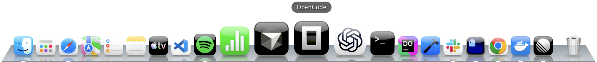
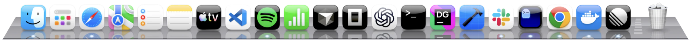
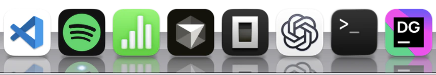
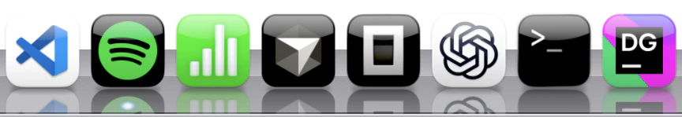

The glass Dock,
back on your Mac.
A retro 3D dock for macOS. Free and open source.

Three shelves.
Rebuilt from the 10.5–10.9 Dock: the glass, the reflections, the lights under open apps.

One finish for every icon.
Gloss, a soft bevel and richer colour, added on your Mac. Your apps are never changed.

